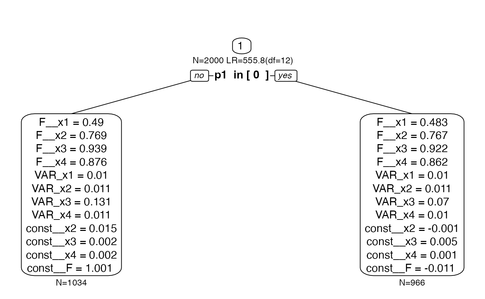
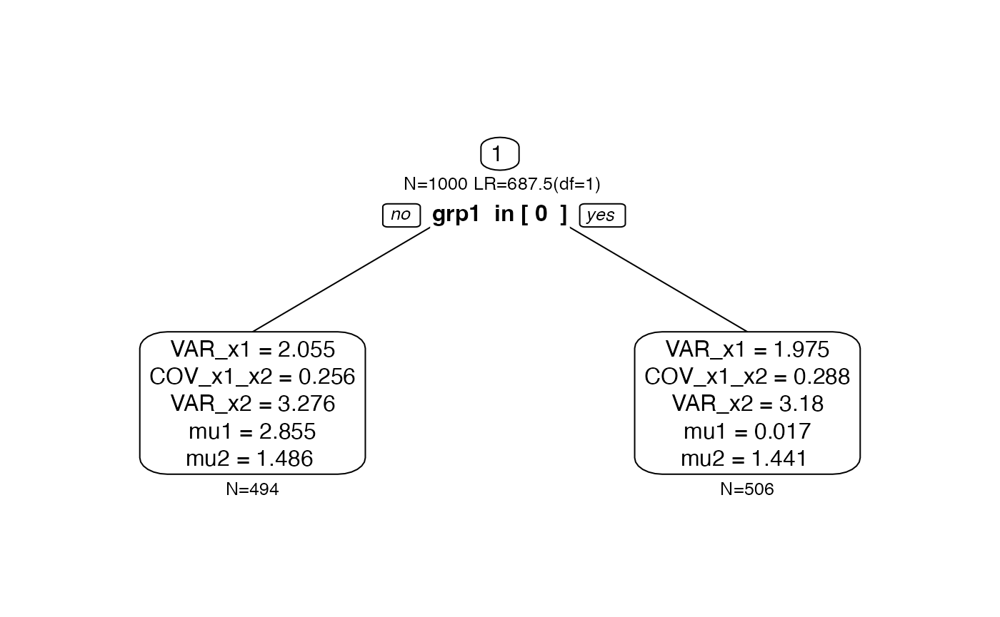

Constraints in semtree
Andreas M. Brandmaier
2025-11-28
Source:vignettes/constraints.Rmd
constraints.RmdConstraints
Load the package
semtree allows different constraints on the split
evaluation (global.invariance,
local.invariance, and focus.parameters). These
can be set in the following object and then passed to the
semtree command:
library(semtree)
cnst <- semtree.constraints(local.invariance=NULL,
global.invariance=NULL,
focus.parameters=NULL)
semtree(model.x, data=df, constraints=cnst)Simulation
To illustrate the invariance constraints, let’s set up a latent factor model with four indicators and simulate some data with a known predictor structure. Let’s create a dataset as follows:
- a latent construct,
lat, measured by four indicators - two predictors
p1andp2 - only one predictor,
p1, has an mean effect on the latent construct - the other predictor,
p2, has an effect on only one indicator (different loadings across groups; DIF)
N <- 2000
p1 <- sample(size = N,
x = c(0, 1),
replace = TRUE)
p2 <- sample(size = N,
x = c(0, 1),
replace = TRUE)
lat <- rnorm(N, mean = 0 + p1)
loadings <- c(.5, .8, .7, .9)
observed <- lat %*% t(loadings) + rnorm(N * length(loadings), sd = .1)
observed[, 3] <- observed[, 3] + p2 * 0.5 * lat
cfa.sim <- data.frame(observed, p1 = factor(p1), p2 = factor(p2))
names(cfa.sim)[1:4] <- paste0("x", 1:4)Here is the OpenMx model specification
require("OpenMx");
manifests<-c("x1","x2","x3","x4")
latents<-c("F")
model.cfa <- mxModel("CFA", type="RAM", manifestVars = manifests,
latentVars = latents,
mxPath(from="F",to=c("x1","x2","x3","x4"),
free=c(TRUE,TRUE,TRUE,TRUE), value=c(1.0,1.0,1.0,1.0) ,
arrows=1, label=c("F__x1","F__x2","F__x3","F__x4") ),
mxPath(from="one",to=c("x2","x3","x4"),
free=c(TRUE,TRUE,TRUE), value=c(1.0,1.0,1.0) ,
arrows=1, label=c("const__x2","const__x3","const__x4") ),
mxPath(from="one",to=c("F"), free=c(TRUE),
value=c(1.0) , arrows=1, label=c("const__F") ),
mxPath(from="x1",to=c("x1"), free=c(TRUE),
value=c(1.0) , arrows=2, label=c("VAR_x1") ),
mxPath(from="x2",to=c("x2"), free=c(TRUE),
value=c(1.0) , arrows=2, label=c("VAR_x2") ),
mxPath(from="x3",to=c("x3"), free=c(TRUE),
value=c(1.0) , arrows=2, label=c("VAR_x3") ),
mxPath(from="x4",to=c("x4"), free=c(TRUE),
value=c(1.0) , arrows=2, label=c("VAR_x4") ),
mxPath(from="F",to=c("F"), free=c(FALSE),
value=c(1.0) , arrows=2, label=c("VAR_F") ),
mxPath(from="one",to=c("x1"), free=F, value=0, arrows=1),
mxData(cfa.sim, type = "raw")
);Global Invariance
Global invariance is a relatively naive way of estimating a tree, in which a chosen set of parameters is equal across all leafs. This is achieved by fixing one or more selected parameters to the sample estimate before the tree is grown. Global invariance assures that the chosen parameters don’t differ across the possible subgroups. However, if the parameters do differ, this leads to misspecification and jeopardizes the interpretation of the resulting tree structure. Using this approach is usually not recommended because it’s typically not safe to assume that parameters are identical across a wide range of splits of the data. There may be cases in which it may make sense to constrain loading structures or means but it seems particularly dangerous to constrain variance components with such an approach.
tree.gc <- semtree(model.cfa, data=cfa.sim, constraints=
semtree.constraints(global.invariance =
c("F__x1","F__x2","F__x3","F__x4")))
#> > Model was not run. Estimating parameters now.
#> Beginning initial fit attemptFit attempt 0, fit=1298.9451536784, new current best! (was 23577.0760914388) > Global Constraints:
#> F__x1 F__x2 F__x3 F__x4
#> > Freely Estimated Parameters:
#> VAR_x1 VAR_x2 VAR_x3 VAR_x4 const__x2 const__x3 const__x4 const__F
#> Beginning initial fit attempt Beginning initial fit attemptFit attempt 0, fit=663.524645658346, new current best! (was 913.236572598752) Beginning initial fit attemptFit attempt 0, fit=3.03660891210734, new current best! (was 286.660615651562)Beginning fit attempt 1 of at maximum 10 extra tries Fit attempt 1, fit=3.03660891207142, new current best! (was 3.03660891210734)Beginning fit attempt 2 of at maximum 10 extra tries Beginning fit attempt 3 of at maximum 10 extra triesBeginning fit attempt 4 of at maximum 10 extra triesBeginning fit attempt 5 of at maximum 10 extra triesBeginning fit attempt 6 of at maximum 10 extra triesBeginning fit attempt 7 of at maximum 10 extra triesBeginning fit attempt 8 of at maximum 10 extra triesBeginning fit attempt 9 of at maximum 10 extra triesBeginning fit attempt 10 of at maximum 10 extra tries Beginning initial fit attemptFit attempt 0, fit=61.0780632213005, new current best! (was 376.864030006811)Beginning fit attempt 1 of at maximum 10 extra tries Fit attempt 1, fit=61.0780632212604, new current best! (was 61.0780632213005)Beginning fit attempt 2 of at maximum 10 extra tries Beginning fit attempt 3 of at maximum 10 extra triesBeginning fit attempt 4 of at maximum 10 extra triesBeginning fit attempt 5 of at maximum 10 extra triesBeginning fit attempt 6 of at maximum 10 extra triesBeginning fit attempt 7 of at maximum 10 extra triesBeginning fit attempt 8 of at maximum 10 extra triesBeginning fit attempt 9 of at maximum 10 extra triesBeginning fit attempt 10 of at maximum 10 extra tries Beginning initial fit attemptFit attempt 0, fit=109.2631223031, new current best! (was 385.708581079703)Beginning fit attempt 1 of at maximum 10 extra tries Fit attempt 1, fit=109.26312230303, new current best! (was 109.2631223031)Beginning fit attempt 2 of at maximum 10 extra tries Fit attempt 2, fit=109.263122302997, new current best! (was 109.26312230303)Beginning fit attempt 3 of at maximum 10 extra tries Beginning fit attempt 4 of at maximum 10 extra triesBeginning fit attempt 5 of at maximum 10 extra triesBeginning fit attempt 6 of at maximum 10 extra triesBeginning fit attempt 7 of at maximum 10 extra triesBeginning fit attempt 8 of at maximum 10 extra triesBeginning fit attempt 9 of at maximum 10 extra triesBeginning fit attempt 10 of at maximum 10 extra tries Beginning initial fit attemptFit attempt 0, fit=75.2972899100125, new current best! (was 86.387590594954)Beginning fit attempt 1 of at maximum 10 extra tries Fit attempt 1, fit=75.297289910005, new current best! (was 75.2972899100125)Beginning fit attempt 2 of at maximum 10 extra tries Fit attempt 2, fit=75.2972899100005, new current best! (was 75.297289910005)Beginning fit attempt 3 of at maximum 10 extra tries Beginning fit attempt 4 of at maximum 10 extra triesBeginning fit attempt 5 of at maximum 10 extra triesBeginning fit attempt 6 of at maximum 10 extra triesBeginning fit attempt 7 of at maximum 10 extra triesBeginning fit attempt 8 of at maximum 10 extra triesBeginning fit attempt 9 of at maximum 10 extra triesBeginning fit attempt 10 of at maximum 10 extra tries Beginning initial fit attemptFit attempt 0, fit=10.8507447674081, new current best! (was 22.8755317079801)Beginning fit attempt 1 of at maximum 10 extra tries Fit attempt 1, fit=10.8507447674042, new current best! (was 10.8507447674081)Beginning fit attempt 2 of at maximum 10 extra tries Fit attempt 2, fit=10.8507447673992, new current best! (was 10.8507447674042)Beginning fit attempt 3 of at maximum 10 extra tries Beginning fit attempt 4 of at maximum 10 extra triesBeginning fit attempt 5 of at maximum 10 extra triesBeginning fit attempt 6 of at maximum 10 extra triesBeginning fit attempt 7 of at maximum 10 extra triesBeginning fit attempt 8 of at maximum 10 extra triesBeginning fit attempt 9 of at maximum 10 extra triesBeginning fit attempt 10 of at maximum 10 extra tries ✔ Tree construction finished [took 4s].
plot(tree.gc)
Even though we retrieve both predictors in the tree, the tree
structure does not represent the data generating model (p2
is found to be conditional only on p1>=.5) and the
misspecification in the loadings leads to bias in the mean
structure.
Local Invariance
Local invariance builds a tree under which all parameters across the
leafs of a tree may differ but the chosen parameters may not differ
significantly from each other. If they differed significantly, the
respective split is not considered a valid split and is not chosen.
Local constraints are implemented by means of an additional test of
measurement invariance. For each possible split, we fit an additional
null model, in which the locally invariant parameters are constrained to
be equal across the two resulting daughter nodes of a split. Only if we
reject this null hypothesis, we believe that there is measurement
non-invariance and disregard the split. A typical use-case is to the set
of loadings of a factor model as local.invariance to allow
a tree with weakly measurement-invariant leafs.
tree.lc <- semtree(model.cfa, data=cfa.sim, constraints=
semtree.constraints(
local.invariance= c("F__x1","F__x2","F__x3","F__x4")))
#> > Model was not run. Estimating parameters now.
#> Beginning initial fit attemptFit attempt 0, fit=1298.9451536784, new current best! (was 23577.0760914388) > No Invariance alpha selected. alpha.invariance set to:0.05
#> Beginning initial fit attempt
#> Beginning initial fit attemptFit attempt 0, fit=636.971559512192, new current best! (was 913.236572598752) Beginning initial fit attemptFit attempt 0, fit=76.9173269947692, new current best! (was 385.708581079703)Beginning fit attempt 1 of at maximum 10 extra tries Beginning fit attempt 2 of at maximum 10 extra triesBeginning fit attempt 3 of at maximum 10 extra triesBeginning fit attempt 4 of at maximum 10 extra triesBeginning fit attempt 5 of at maximum 10 extra triesBeginning fit attempt 6 of at maximum 10 extra triesBeginning fit attempt 7 of at maximum 10 extra triesBeginning fit attempt 8 of at maximum 10 extra triesBeginning fit attempt 9 of at maximum 10 extra triesBeginning fit attempt 10 of at maximum 10 extra tries ✔ Tree construction finished [took 3s].Now we find p1 as the only predictor that yields
subgroups that pass the measurement invariance test. Even though we have
chosen the four factor loadings as local.invariance
constraint, they are allowed to differ numerically but there was no
significant difference between them.
plot(tree.lc)
Focus Parameters
First, we create some data. Here, we generate 1,000 bivariate
observations x1 and x2 gathered in a data
frame called obs. Also, there are two predictors
grp1 and grp2. Predictor grp1
predicts a mean difference in x1 whereas grp2
predicts differences only in x2.
set.seed(123)
N <- 1000
grp1 <- sample(x = c(0,1), size=N, replace=TRUE)
grp2 <- sample(x = c(0,1), size=N, replace=TRUE)
Sigma <- matrix(byrow=TRUE,
nrow=2,c(2,0.2,
0.2,1))
obs <- MASS::mvrnorm(N,mu=c(0,0),
Sigma=Sigma)
obs[,1] <- obs[,1] + ifelse(grp1,3,0)
obs[,2] <- obs[,2] + ifelse(grp2,3,0)
df.biv <- data.frame(obs, grp1=factor(grp1), grp2=factor(grp2))
names(df.biv)[1:2] <- paste0("x",1:2)A tree without constraints should recover both parameters (given
large enough sample and effect sizes) because it explores differences in
both means and covariance structure of x1 and
x2. Here is an OpenMx model specification for a saturated
bivariate model:
manifests<-c("x1","x2")
model.biv <- mxModel("Bivariate_Model",
type="RAM",
manifestVars = manifests,
latentVars = c(),
mxPath(from="x1",to=c("x1","x2"),
free=c(TRUE,TRUE), value=c(1.0,.2) ,
arrows=2, label=c("VAR_x1","COV_x1_x2") ),
mxPath(from="x2",to=c("x2"), free=c(TRUE),
value=c(1.0) , arrows=2, label=c("VAR_x2") ),
mxPath(from="one",to=c("x1","x2"), label=c("mu1","mu2"),
free=TRUE, value=0, arrows=1),
mxData(df.biv, type = "raw")
);Let’s run this model in OpenMx:
result <- mxRun(model.biv)
#> Running Bivariate_Model with 5 parameters
summary(result)
#> Summary of Bivariate_Model
#>
#> free parameters:
#> name matrix row col Estimate Std.Error A
#> 1 VAR_x1 S x1 x1 4.0283800 0.18015402
#> 2 COV_x1_x2 S x1 x2 0.3039196 0.11443875
#> 3 VAR_x2 S x2 x2 3.2282345 0.14437018
#> 4 mu1 M 1 x1 1.4187341 0.06346925
#> 5 mu2 M 1 x2 1.4628999 0.05681735
#>
#> Model Statistics:
#> | Parameters | Degrees of Freedom | Fit (-2lnL units)
#> Model: 5 1995 8233.926
#> Saturated: 5 1995 NA
#> Independence: 4 1996 NA
#> Number of observations/statistics: 1000/2000
#>
#> Information Criteria:
#> | df Penalty | Parameters Penalty | Sample-Size Adjusted
#> AIC: 4243.926 8243.926 8243.986
#> BIC: -5547.046 8268.465 8252.584
#> To get additional fit indices, see help(mxRefModels)
#> timestamp: 2025-11-28 09:38:44
#> Wall clock time: 0.02297401 secs
#> optimizer: SLSQP
#> OpenMx version number: 2.22.9
#> Need help? See help(mxSummary)Now, we grow a tree without constraints:
tree.biv <- semtree(model.biv, data=df.biv)
#> > Model was not run. Estimating parameters now.
#> Beginning initial fit attemptFit attempt 0, fit=8233.92582585158, new current best! (was 14528.4141425595) Beginning initial fit attemptFit attempt 0, fit=8233.92582585143, new current best! (was 8233.92582585158) Beginning initial fit attemptFit attempt 0, fit=3454.12434636158, new current best! (was 4066.88531956853) Beginning initial fit attemptFit attempt 0, fit=1555.54412300078, new current best! (was 1720.05414323717) Beginning initial fit attemptFit attempt 0, fit=1569.26472590267, new current best! (was 1734.07020312441) Beginning initial fit attemptFit attempt 0, fit=3566.5692080098, new current best! (was 4167.0405062829) Beginning initial fit attemptFit attempt 0, fit=1593.91684303245, new current best! (was 1780.60715329424) Beginning initial fit attemptFit attempt 0, fit=1576.27862642528, new current best! (was 1785.96205471556) ✔ Tree construction finished [took 2s].As expected, we obtain a tree structure that has both p1
and p2 (here we use the viridis colors to give each leaf
node a different frame color, which we’ll use later again):
# default white color for all nodes
cols <- rep("black", semtree:::getNumNodes(tree.biv))
cols[as.numeric(row.names(semtree:::getTerminalNodes(tree.biv)))] <- viridis:::viridis_pal()(4)
plot(tree.biv, border.col=cols)
Let us visualize what this tree is doing. Here is the empirical joint
distribution of both x1 and x2:
require("ggplot2")
ggplot(data = df.biv, aes(x=x1, y=x2))+
geom_density_2d()+
theme_classic()And here is the partition of the observed two-dimensional space implied by the leafs of the tree (compare the density colors to the colors of the leaf nodes in the earlier dendrogram):
df.biv.pred <- data.frame(df.biv,
leaf=factor(getLeafs(tree=tree.biv, data = df.biv)))
ggplot(data = df.biv.pred, aes(x=x1, y=x2))+
geom_density_2d(aes(colour=leaf))+
viridis::scale_color_viridis(discrete=TRUE)+
theme_classic()
What if we were interested only in splits with respect to one of the
two dimensions? In this case, we can set a focus.parameter.
Focus parameters change the split evaluation such that only splits are
evaluated that maximize the misfit between a model in which all
parameters are free and a model in which all parameters are free but the
parameters given in focus.parameter.
Let us first set mu1 as focus parameter:
tree.biv2 <- semtree(model.biv, df.biv, constraints=
semtree.constraints(focus.parameters = "mu1"))
#> > Model was not run. Estimating parameters now.
#> Beginning initial fit attemptFit attempt 0, fit=8233.92582585158, new current best! (was 14528.4141425595) Beginning initial fit attemptFit attempt 0, fit=8233.92582585143, new current best! (was 8233.92582585158) Beginning initial fit attemptFit attempt 0, fit=3740.92185296731, new current best! (was 4086.36288912548) Beginning initial fit attemptFit attempt 0, fit=3795.16307144921, new current best! (was 4147.56293672595) ✔ Tree construction finished [took 1s].
plot(tree.biv2)
As expected, the resulting tree structure only has grp1
as predictor because grp1 predicts differences in
mu1. Predictor grp2 did not come up anymore.
Now, if we set mu2, we should see the exact opposite
picture:
tree.biv3 <- semtree(model.biv, df.biv, constraints=
semtree.constraints(focus.parameters = "mu2"))
#> > Model was not run. Estimating parameters now.
#> Beginning initial fit attemptFit attempt 0, fit=8233.92582585158, new current best! (was 14528.4141425595) Beginning initial fit attemptFit attempt 0, fit=8233.92582585143, new current best! (was 8233.92582585158) Beginning initial fit attemptFit attempt 0, fit=3454.12434636158, new current best! (was 4066.88531956853) Beginning initial fit attemptFit attempt 0, fit=3566.5692080098, new current best! (was 4167.0405062829) ✔ Tree construction finished [took 1s].And, indeed, we see only grp2 as predictor whereas
grp1 was not selected this time.
plot(tree.biv3)Finally, we set the focus.parameter to one of the
variance parameters. None of the predictors predicts differences in the
variance, so we expect an empty tree (only the root node; no predictors
selected):
tree.biv4 <- semtree(model.biv, df.biv, constraints=
semtree.constraints(focus.parameters = "VAR_x2"))
#> > Model was not run. Estimating parameters now.
#> Beginning initial fit attemptFit attempt 0, fit=8233.92582585158, new current best! (was 14528.4141425595) Beginning initial fit attemptFit attempt 0, fit=8233.92582585143, new current best! (was 8233.92582585158) ✔ Tree construction finished [took less than a second].
plot(tree.biv4)